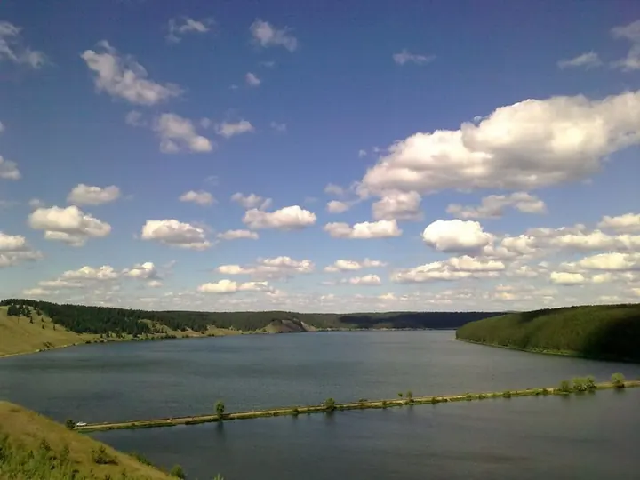
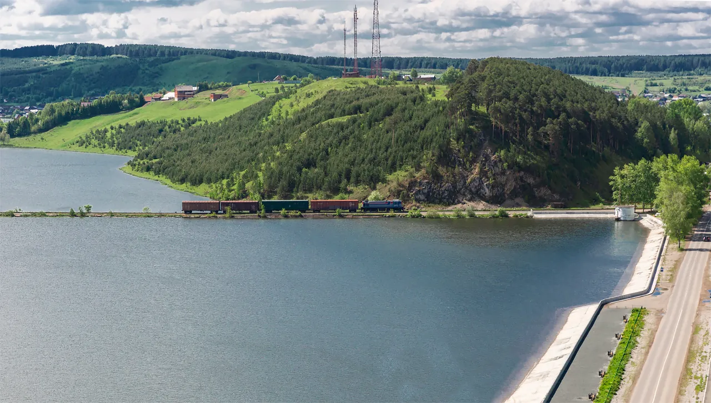
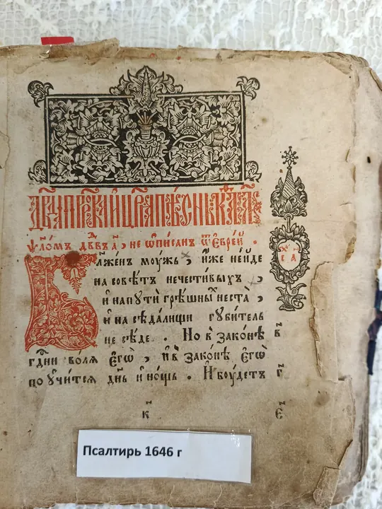
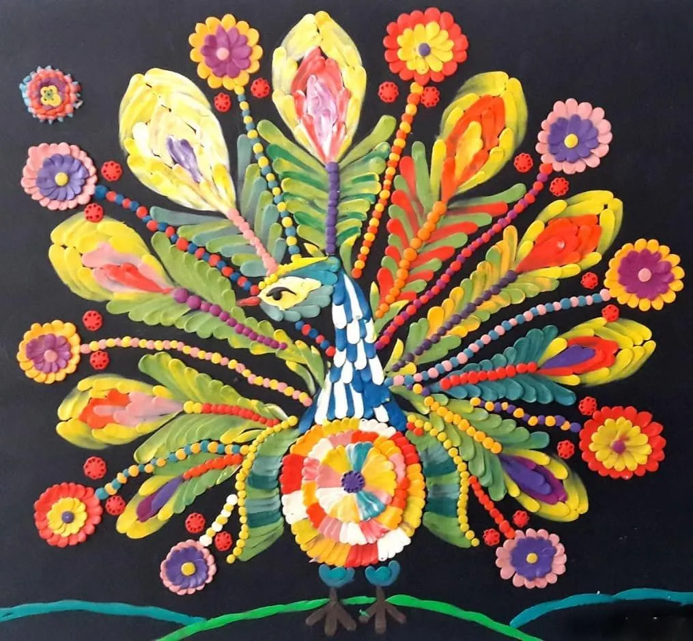
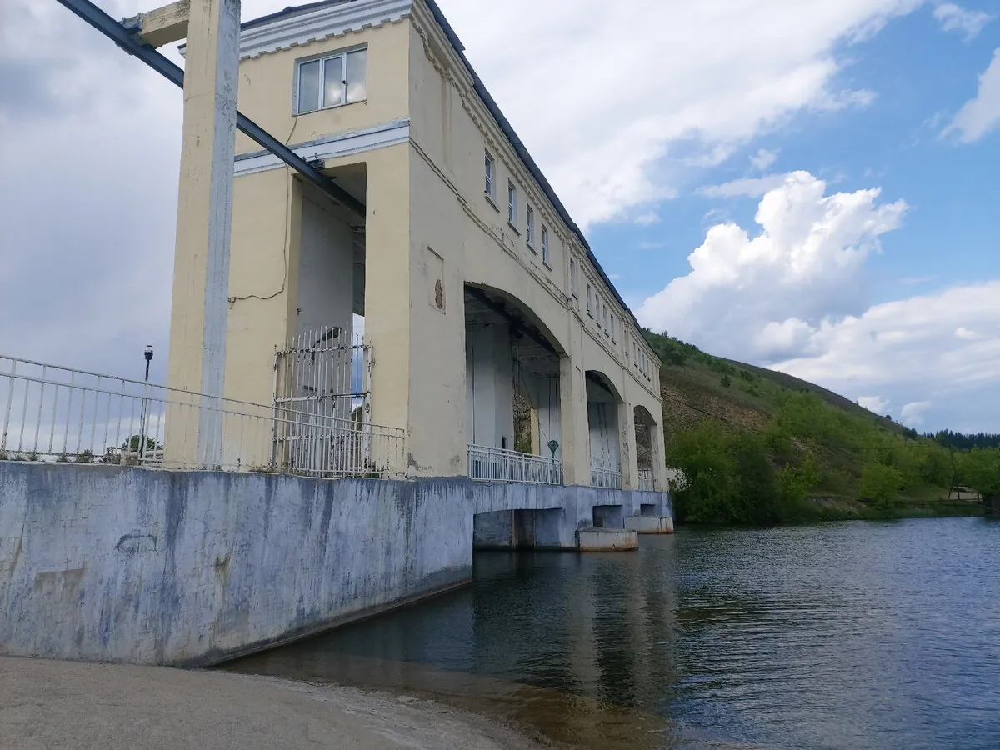
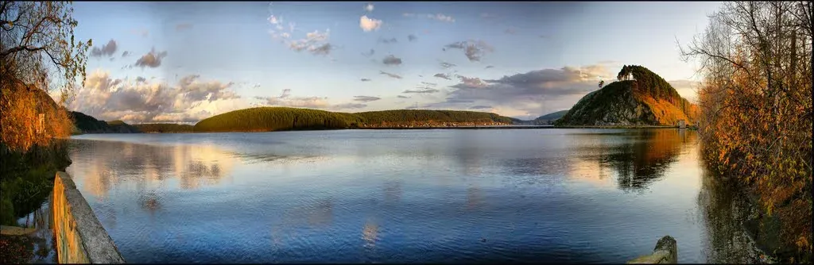

Город и природа
Плотина 1806 года с водосбросом-бучилом, гора Любви, Кукан с поклонным крестом, река Серга и тайна имени «гамаюн».
Читать
Уральская Швейцария
Малый город на реке Серге, спрятанный в природной чаше среди хвойных гор: заводская плотина 1806 года, девятиглавый Вознесенский собор, два музея и легендарные гамаюны.
Михайловск стоит в сорока минутах от природного парка «Оленьи ручьи» и двух часах от Екатеринбурга. Здесь начинали знакомство с Уралом задолго до того, как это стало маршрутом выходного дня.

Плотина 1806 года с водосбросом-бучилом, гора Любви, Кукан с поклонным крестом, река Серга и тайна имени «гамаюн».
Читать
Девятиглавый храм 1896 года: от деревянной церкви 1835-го до разгрома 1935-го и возрождения в 1990-е. Печи XIX века действуют до сих пор.
Читать

Четыре авторских маршрута из Екатеринбурга — паломнический, природный, краеведческий и гастрономический. Жильё, кафе, телефоны.
Выбрать маршрут«Встанет здесь град с трудовым людом. Будут они песни любить и на разных инструментах играть. И не одолеет людей этих никакое лихо, пока имя своё не забудут!»
Сказание о монахе Германе и вещей птице Гамаюн
Так птица Гамаюн, по преданию, напела монаху Герману за много лет до основания завода. Переселенцы из центральных губерний привезли сюда особый говор — «гамаюнить» значит говорить бойко и напевно, — традиции деревянного зодчества и песенный фольклор. Гамаюн с женским ликом украшает герб Михайловска, а здесь родился Владимир Трошин — первый исполнитель «Подмосковных вечера».


В 1806 году её сложили вручную: основа — бревенчатый сруб из лиственницы, дерева, которое в воде не гниёт, а каменеет, как гранит.
В 1962-м плотину одели в железобетон, но лиственничная основа по-прежнему держит воду. Три шлюза открывают в весенний паводок, а бурный участок сброса местные зовут «бучилом». Пруд образован слиянием Серги и Демид, с юга в него впадает Куба — его пересекает железнодорожная насыпь, по которой заводские тепловозы возят продукцию на магистраль.
Именитый московский купец Михаил Павлович Губин начинает строительство Михайловского железоделательного завода. Посёлок и завод названы в честь основателя.
Строится плотина заводского пруда — лиственничный сруб, который выдержит два столетия и переживёт железобетонную «одежду» 1962 года.
Официальный пуск Михайловского железоделательного завода. Позже на его базе вырастет завод по обработке цветных металлов — «Михалюм».
Архиепископ Пермский и Верхотурский Аркадий выдаёт храмозданные грамоты. Заложена деревянная Вознесенская церковь; её чугунная закладная плита хранится теперь в церковно-историческом музее.
Красноуфимский мастер Фаддей Мальков строит девятиглавый Вознесенский собор из собственного кирпича — кладка окажется монолитной и не поддастся даже технике.
Собор закрывают: колокола снимают целую неделю при возмущении горожан, в здании устраивают клуб металлургов, кинотеатр и спортзал — в главном алтаре.
Здание возвращают верующим. В апреле 1993-го над куполом вновь засияет крест, а на Рождество 1993 года пройдёт первое за 58 лет архиерейское богослужение.
Приход собора открывает церковно-исторический музей — победитель конкурса Фонда Президентских грантов. В 2025-м он расширяется в отреставрированном купеческом особняке XIX века.

Открыто новое мемориальное пространство с центральной скульптурной композицией «Журавли» — по мотивам стихов Расула Гамзатова.
Церковно-исторический музей расширил экспозицию: залы открылись в отреставрированном купеческом особняке XIX века на ул. Кирова, 14.
На вершине Кукана торжественно установлен шестиметровый поклонный крест. На горе обустраиваются смотровая площадка и экотропа.
В Центре культуры и досуга проходит фестиваль российской песни «Все, что на сердце у меня» — в честь земляка, первого исполнителя «Подмосковных вечера».
Четыре готовых маршрута из Екатеринбурга, жильё, кафе и телефоны — в разделе туризма.